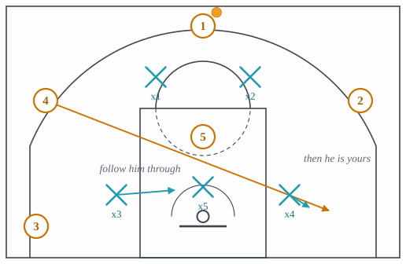

4.6: Zones and Junk Defenses
Chapter 4: Defense
Everything in lectures 4.3 to 4.5 assumed that each defender had a man. A zone drops the assumption. Each defender is responsible for an area of the floor and for whoever is in it, and when an attacker leaves the area he stops being that defender’s problem. The screen, which was the whole subject of 4.3, does almost nothing to a zone, because there is no assignment to collide. What the zone gives up in exchange is the arithmetic of the perimeter: five areas cannot cover the whole arc, and an offense that moves the ball faster than the zone moves its bodies gets an open three somewhere on every possession.
Section 1 is the zone as a decision and what every zone concedes. Sections 2 to 5 are the four shapes a viewer will see, the 2-3, the 3-2, the 1-2-2 and the 1-3-1, each with the picture of where it is thick and where it is thin. Section 6 is the match-up zone, which tries to have both. Section 7 is the junk defenses, the box-and-one and the triangle-and-two, which are zones with a grudge.
1 Guarding areas
A zone is chosen for one of three reasons. The first is protection: a defense that cannot stay in front of the other team’s drivers packs the paint and makes them shoot over it. The second is personnel: a team with a slow big who cannot guard a ball screen puts him in the middle of a zone where the ball screen does not exist. The third is disruption: an offense that has practiced against man-to-man all week sees a zone and has to think, and thinking is slow. Zones are far more common below the professional level for all three reasons, and rare at the top because professional shooters make the zone’s one concession too expensive.
That concession is the same in every shape. A zone guards the paint with more bodies than man-to-man can and the arc with fewer, so it gives up the outside shot and the skip pass, and it gives up offensive rebounds, because no defender has a man to box out. Zone offense, the subject of lecture 3.12, is the list of ways to collect on those: the ball in the high post where two areas meet, the short corner behind the baseline defenders, the overload that puts three attackers in two areas, and the skip pass across the whole zone to the side it has just left.
- Assignment
- Each defender guards an area and whoever enters it. The ball is guarded by whichever area it is in; the others shift toward it, so the zone is always tilted to the ball side.
- Concedes
- The outside shot, the skip pass to the far side, and the offensive rebound. Every shape below trades a different piece of the arc for a different piece of the paint.
- Requires
- Five players who shift together on every pass and talk through every cutter. A zone that moves late is five men standing in five spots.
- Beaten by
- Zone offense: the high-post entry, the short corner, the overload, and the skip pass to the side the zone has just left.
2 The 2-3
The 2-3 zone is the most common zone in the game and the one the word usually means (Figure 1). Two defenders stand above the free-throw line, one either side of the lane, and three stand across the lane near the blocks and in front of the rim. It packs the paint completely: a drive from anywhere meets a defender at the end of it, and the rim is guarded by a big who never leaves.

It is thin in two places. The high post, at the free-throw line, sits exactly between the front two and the back three, and a player who catches there has a defender coming from each direction and neither arriving first. The corners are the back line’s responsibility, and the back-line defender who runs to a corner shooter has left the block behind him empty. The 2-3’s whole vulnerability is the pass from the high post to the corner, and lecture 3.12’s zone offense is built to throw it.
- Assignment
- Two up, three back. The front pair guards the top and the wings; the back three guard the blocks and the rim and slide to the corners.
- Concedes
- The high post and the corner three, and the offensive glass.
- Requires
- A back line that talks, since three players share the corners and the rim, and a middle defender who never leaves the paint.
- Beaten by
- Zone offense through the high post: the catch at the free-throw line, then the pass to the corner the back line has to stretch to, and the skip pass when the whole zone has shifted.
3 The 3-2
The 3-2 zone turns the 2-3 upside down (Figure 2). Three defenders stand across the free-throw line extended, one at the top and one on each side, and two stand near the blocks. The arc is crowded and hard to shoot over, which is why a defense chooses it against a team of perimeter shooters. Behind the three, the two low defenders have the whole baseline and the glass to themselves.

It is thin where the 2-3 is thick. The high post is guarded, because the top defender is standing near it, but the short corners and the baseline are two players’ responsibility and the offensive rebound is theirs to lose. A team that shoots badly and rebounds well is the 3-2’s worst opponent.
- Assignment
- Three across the top, two on the blocks. The top three take away the arc and the high post; the low two guard the baseline and the rim.
- Concedes
- The short corner, the baseline drive, and the offensive rebound against a bigger team.
- Requires
- Two low defenders who can guard the whole baseline and rebound against five.
- Beaten by
- Zone offense along the baseline: the short-corner catch behind the low pair, and the drive into the gap between a top defender and a low one.
4 The 1-2-2
The 1-2-2 zone is the shape between them (Figure 3). One defender at the top, two at the elbows, two on the blocks. From the top it looks like a 3-2 and from the baseline like a 2-3, and it shifts into either: when the ball goes to a wing, the elbow defender on that side steps out and the shape is a 2-3 tilted to the ball; when the ball is at the top, the point defender and the two elbows are a three-man front. It covers the arc better than the 2-3 and the baseline better than the 3-2, and it does neither as well as the shape built for it.

- Assignment
- One up, two at the elbows, two on the blocks. The elbow defender on the ball side steps out to the wing; the point defender guards the top and drops to the high post when the ball goes to a wing.
- Concedes
- The short corner and the wing three when the elbow defender is late stepping out.
- Requires
- Two elbow defenders who can guard a wing and recover to the high post, which is a lot of ground.
- Beaten by
- The quick wing-to-corner pass before the elbow defender has stepped out, and the same high-post and short-corner attacks that beat the 2-3.
5 The 1-3-1
The 1-3-1 zone is a different kind of zone, because it is not built to protect (Figure 4). One defender stands at the point above the arc, three stand across the free-throw line with the middle one at the line itself, and one, the baseline runner, covers the whole baseline alone. Its purpose is to trap. When the ball goes to a wing, the point defender and the wing defender converge on it; when it goes to a corner, the wing defender and the baseline runner do. The shape is long and thin, it invites the pass to the wing, and it punishes the handler who catches there and holds the ball.

The 1-3-1 concedes the corners, because a single baseline runner cannot be in both, and it concedes the skip pass, because the trap has committed two defenders to one side. It is a gambling zone: it produces turnovers against a team that panics in the trap, and open corner threes against one that does not.
- Assignment
- Point, three across, one runner. The point and the ball-side wing trap the wing catch; the runner covers whichever corner the ball is nearer; the middle defender guards the high post and the rim.
- Concedes
- The far corner, the skip pass out of the trap, and the offensive rebound; only one defender starts near the baseline.
- Requires
- A baseline runner who can cover corner to corner, and trappers who arrive together and do not foul.
- Beaten by
- The skip pass out of the trap to the far corner, and a handler who keeps his dribble alive and splits the trap.
6 The match-up zone
The match-up zone tries to keep what a zone is good at and remove what it is bad at (Figure 5). It starts in a zone shape, usually a 2-3 or a 1-2-2. But inside the shape, each defender guards the attacker in his area man to man for as long as the attacker is there, denying the pass and following the cut, and when the attacker leaves the area he is handed to the next defender the way a zone hands off. The offense sees a man-to-man defender on every catch and a zone on every pass, and an offense that runs its zone offense finds bodies on its shooters while one that runs its man offense finds its screens doing nothing.

It is the hardest defense in this lecture to play, because every hand-off is a conversation, and the defense that does not talk gives up a cutter every time. Its concession is the seams: the moment of the hand-off, when a cutter is between two areas and the two defenders have not yet agreed whose he is.
- Assignment
- Zone shape, man principles inside it. Guard the attacker in your area as a man; hand him to the next area when he leaves; take whoever arrives.
- Concedes
- The cutter at the seam, during the hand-off; and whatever the base shape concedes.
- Requires
- Constant talk, and five defenders who can each guard any attacker one-on-one for a few seconds.
- Beaten by
- Cutters through the seams faster than the hand-off can be made, and an overload that puts two attackers in one area at once.
7 Junk defenses
A junk defense is a zone-and-man hybrid built to take one or two players out of a game. It is also called a combination defense. It concedes that the other team has a scorer the defense cannot guard within a normal scheme, assigns one defender to that scorer full time, and guards the other four attackers with a zone of the remaining four defenders. The bet is that the other four attackers cannot beat a four-man zone, and it is a bet made against teams with one star and little around him, which is why junk defenses are common in high school and college and almost unheard of in a league where every roster has three players who can score.
The box-and-one is the common form (Figure 6). Four defenders form a box, two at the elbows and two near the blocks, and the fifth stands face to face with the scorer and follows him everywhere, ignoring the ball entirely. The scorer never catches without a defender in his chest, and if he does catch he is met by the box as well.

The diamond-and-one is the box with its four zone defenders turned forty-five degrees (Figure 7): one at the free-throw line, one on each side of the lane, one in front of the rim. It guards the top of the key and the rim better than the box and the blocks and the short corners worse, and a defense chooses between them by where the other four attackers like to shoot from.

The triangle-and-two is the same idea against two scorers (Figure 8). Two defenders chase, and the remaining three form a triangle, one at the free-throw line and two near the blocks. Three defenders cannot guard the arc, so it concedes the outside shot to the other three attackers entirely, and it is played only when the defense is sure those three cannot make it.

Every junk defense concedes the same thing in the end: the players it is not guarding. The box gives up the shots of the four attackers who are not the star, the triangle gives up the arc to the three who are not the two scorers, and both are beaten the moment a player the defense chose to ignore proves he should not have been. The scorer’s own counter is to screen: a chased player who sets a screen drags his chaser into a collision with the box, and the box has no rule for that.
- Assignment
- One or two defenders chase the scorers face to face and ignore the ball; the rest form a box or a triangle zone and guard everyone else by area.
- Concedes
- The shots of the attackers the defense chose not to chase, and the offensive glass.
- Requires
- A chaser with the stamina to deny one man for forty minutes, and an opponent whose other players cannot punish the zone behind him.
- Beaten by
- The unchased players scoring; the chased scorer setting screens, which the zone has no rule for; and the post-up of a big against a four-man zone that has no one to double.
8 Names heard for which there is no entry yet
The glossaries this site draws on name one more junk defense, described by one publisher only, so under this site’s rule it has no entry until a second independent source names it. The description is given here so the word is not a mystery when it is heard; the rule and the dated diff behind it are in the plan (plan/PLAN.md, section 8.4) and data/sources/glossary_diff_2026-09-21.md. The diamond-and-one above was in this list until a second glossary named it on 2026-09-21; that is how a name moves from here to an entry.
- Amoeba defense. A junk defense shaped like a 1-3-1, built to confuse and force turnovers rather than to protect; the one glossary that describes it calls it “A junk defense made popular by coach Jerry Tarkanian at UNLV.”1 Named by one publisher.
The idea to carry into lecture 4.7 is that the 1-3-1 was a zone built to trap, and a trap needs the ball to come to it. The next lecture is about defenses that go and get the ball instead, in the back court, before the offense has arrived at all.
Footnotes
Basketball For Coaches, “Basketball Terms”, https://www.basketballforcoaches.com/basketball-terms/, retrieved 2026-09-21. Verbatim: “Amoeba Defense - A junk defense made popular by coach Jerry Tarkanian at UNLV. Similar to the 1-3-1 zone, the Amoeba defense is designed to confuse the opponent and force turnovers.” Saved as
basketballforcoaches-termsin the source registry. The attribution to Tarkanian is that glossary’s claim and is not confirmed here by a second source.↩︎